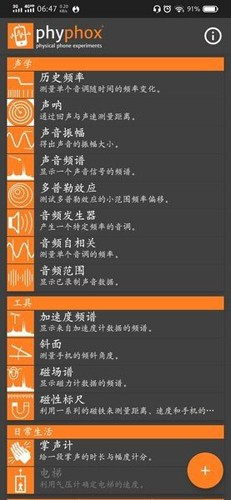

phyphox 完全免费，但这笔"时间账"你算过吗
一个让手机秒变物理实验室的开源工具——它不收钱、不打广告、不要你的联系人权限，那它到底值不值得你花时间装、花精力学？本文把免费背后的机会成本拆给你看。
先抛问题：一个免费 App，值不值得我花时间？
phyphox 是德国 RWTH 亚琛工业大学开发的物理实验应用，从 2016 年发布以来，全程免费、开源、无广告、无内购。听起来像是天上掉馅饼的事——但免费不代表你没有成本：下载安装要花时间，研究它的功能要花时间，真正上手做实验还要花时间。这篇文章就来算一笔账：这笔"时间投资"值不值？
先看看它到底给了什么。打开 phyphox 之后，主菜单里按学科分类列着三十多个内置实验：力学、声学、热学、趣味、工具……每个实验都直接调用你手机上的传感器——加速度计、陀螺仪、磁力计、麦克风、气压计，v1.2.0 之后甚至把摄像头也纳入了传感器体系，能做亮度测量、HSV 颜色分析、光谱实验。v1.2.1 更是把手机闪光灯变成了 LED 频闪仪，用来观察旋转物体的运动细节。

它的官网做得相当克制——没有夸张的宣传语，首页就是一张手机界面截图加一行副标题："用你口袋里的设备做物理实验"。下载渠道也很干净，不引导你注册账号，不弹窗求评分，甚至连网络权限都不申请（远程控制功能是自己建 HTTP 服务，不走外部网络请求）。
定价拆解：它免费到什么程度？
说 phyphox 免费，容易让人以为是那种"基础功能免费、高级功能付费"的套路。真不是。我仔细对照了文档站里的版本演进记录和功能清单，它从 v1.0 到 v1.2.1 的所有功能：
- 三十多个内置实验（力学、声学、热学、光学、趣味）
- 自定义实验编辑器（网页版，拖拽式设计）
- 远程控制（浏览器打开本地局域网地址就能操作）
- 数据导出（CSV / TSV / Excel，通过手机其他 App 发送）
- 相机类实验（亮度测量、HSV 分析、亮度频谱）
- LED 频闪仪
- 全部开放源代码
以上全部免费，没有任何付费版或 Pro 版的影子。 文档里也没提到任何"解锁高级功能"的门槛——v1.1.7 就加了自定义实验编辑器，v1.2.0 把相机功能放进来，每次大版本更新都是实打实的新功能免费推送。
唯一的"限制"是硬件依赖：你手机上没有气压计，电梯实验就自动隐藏；iOS 不暴露距离传感器和光感器，对应的秒表实验也就不可用。但这不是 phyphox 故意卡你，是操作系统不给权限。Android 和 iOS 双端都能装，没有平台歧视。
权限申请方面更干净。打开声音实验才要麦克风，打开 GPS 实验才要位置信息，打开相机实验才要相机权限——用完了也不常驻后台。不会申请通知、联系人、相册这些八竿子打不着的权限。这点我专门确认了，同类应用里真的少见。
算账：三类人各算一笔时间账
免费的东西，成本全在时间上。我把用户分成三类，分别算一算。
轻度用户：偶尔玩一玩的好奇宝宝
如果你只是偶尔想测个重力加速度、好奇一下自己骑车时的加速度曲线——那 phyphox 的时间成本几乎为零。从官方下载拿安装包三分钟装好，第一次打开应用会自动检测你的传感器，一到两秒就能列出你手机上可用的全部实验。点进"加速度频谱"，大圆形的开始按钮一按，数据就开始实时跑了。导出也很方便，三个点菜单里选"Export data"，CSV 文件直接通过微信或邮件发出去。
这类人：时间成本 ≈ 10 分钟（下载 + 首次体验 + 导出一份数据）。换来的是随时能把手机变成测量工具的便利。如果你原本就对物理实验有点兴趣，这笔账稳赚。如果你连高中物理都没学过，装了可能也只会打开一次然后放着吃灰——那省下这 10 分钟也行。
主力用户：需要用它上课或做演示的老师、学生
这是 phyphox 的核心目标用户群体。v1.2.0 加的全屏图表功能，明显就是为课堂投影设计的——老师拿着手机在讲台前演示，后排同学也能看清波形。按硬件分类的浏览视图也特别适合教学：讲"加速度计"的时候，一键就能列出所有用到加速度计的实验，不用在力学、趣味、原始数据几个分类里来回翻。
我粗略估算一下一个中学物理老师的使用场景：一个学期里，至少有十节课可以用 phyphox 做演示。钟摆实验自动检测摆动峰值、计算周期和重力加速度 g 的估计值；声学秒表用麦克风音量阈值触发计时，演示声音传播速度；电梯实验靠气压计积分得出高度变化……这些实验如果用传统仪器（打点计时器、秒表、温度计），课前准备就要半小时，课堂上还要调设备。用 phyphox 呢？提前五分钟在主菜单里找到对应实验，上课直接投影就行。
这类人：时间成本 ≈ 30 分钟（花一个周末通读一遍phyphox文档的入门章节，之后每次上课直接用）。省下的是每节课 15~30 分钟的传统仪器准备时间，一个学期累积下来就是好几小时。而且 phyphox 能做到的实时性和可视化，很多传统仪器根本做不到。
重度用户：要做自定义实验、写数据脚本的进阶玩家
这是最硬核的一类人。v1.1.7 加的自定义实验编辑器是 phyphox 最大的杀手锏——一个网页版的拖拽式编辑器，你可以自己设计实验界面、选择要用到哪些传感器、设定采样率和数据处理逻辑，然后导出一个 .phyphox 文件，导入手机 App 就能跑。
这类用户的时间成本就高了。入门编辑器至少要花一两个晚上通读文档、跑几遍官方示例；真正设计一个原创实验，可能要折腾好几天。但换来的是什么？一个完全定制化的物理实验工具——不需要你学 Android 开发，不需要你搭 Arduino 硬件，不需要你买数据采集卡。手机本身就是一台微型化的、带屏幕、带电池、带无线通信的物理实验设备。
这类人：时间成本 ≈ 数小时到数天。省下的钱呢？一套专业级的物理实验数据采集系统（比如 PASCO ScienceWorkshop 或 Vernier LabQuest），起步价就是几千块，高端型号过万。phyphox 免费，功能虽然比不上专业仪器的精度和稳定性，但对于教学演示、学生科研、甚至一些初级的测量任务来说，已经够用了。
替代方案对比：不装 phyphox 有什么别的路？
当然，phyphox 不是唯一的选择。我整理了几种替代思路，各有优劣。
同类免费 App：Physics Toolbox Suite、iOscilloscope、Spectroid。Physics Toolbox 功能最接近，但界面不如 phyphox 干净，部分高级功能需要付费升级；Spectroid 专注音频频谱分析，但只能用麦克风，做不了力学实验；iOscilloscope 其实就是个示波器界面，需要外接信号源。综合来看，phyphox 是免费阵营里覆盖面最广、权限最干净的。
专业仪器路线：买 PASCO 或 Vernier 的传感器套装。优势是精度高、稳定性好、有配套教材。劣势是贵——一套入门级的运动传感器套装就要三四千块，而且便携性差，搬来搬去麻烦。如果你是学校实验室采购，这条路绕不开；如果你是个人用户，性价比太低。
Arduino / ESP32 自建路线：自己焊传感器、写代码、搭界面。精度可以做得很高，成本几十到几百块，完全自主可控。但时间成本巨大——你得懂一点电路、一点嵌入式开发、一点 Python 数据处理。phyphox 的优势是开箱即用，不需要任何硬件知识。
传统仪器路线：打点计时器、秒表、温度计、弹簧秤……优点是不需要任何电子设备，纯机械原理。缺点是精度有限、实时性差、数据还要手动记录和绘图。phyphox 在可重复性和可视化方面碾压传统仪器。
结论：三秒钟对号入座
总结一下，我的建议很明确：
闭眼装的人：物理老师、中学生/大学生（有物理课的）、对动手实验有兴趣的创客。理由很简单——免费、干净、上手快，装上不亏，说不定哪天就能用上。
可以再等等的人：完全没有物理背景、手机存储空间紧张、平时连短视频都很少刷的用户。phyphox 对你来说确实可能只是占空间的摆设，不如先把这篇文章的链接收藏起来，哪天突然想玩物理实验了再装。
永远不用装的人：已经买了专业物理实验仪器、正在用 Arduino 自建实验平台、或者对任何科学实验都提不起兴趣的人。你们有更适合自己的工具，phyphox 的优势在你们那里发挥不出来。
最后说一句：phyphox 从 2016 年到现在快十年了，版本更新确实慢（从 v1.1.7 到 v1.2.0 隔了好多年），但每次更新都是实质性的功能扩展，不是刷版本号。v1.2.0 加相机、v1.2.1 加 LED 频闪仪——这些功能每一个都是硬做出来的，不是接个广告 API 就能搞定的事。这种开发节奏和态度，在现在的移动应用生态里挺少见的，值得支持一下。源码在 GitHub、Gitee、GitCode 都有镜像，感兴趣的可以去翻翻看具体实现。